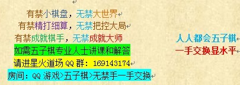

暑假杯第二轮棋评：三借东风——借用角落的巧妙拓展
#1 暑假杯第二轮棋评：三借东风——借用角落的巧妙拓展 作者：一夜晴 发表时间：2013-7-31 18:03:33
暑假杯第三轮棋评：三借东风
--借用角落的巧妙拓展
圣棋盟第二轮二台（蔡新雨著）
在写棋评前首先感谢我的社团圣棋盟家族多年来对五子棋棋手的精心培养，感谢族长以及家族管理人员对比赛的默默付出，祝历史悠久的圣棋盟越办越好。最后，感谢本次比赛的主办方，以及自由五子棋慢棋平台对比赛的精心组织，衷心祝愿五子棋越来越好。
人人都会五子棋，一手交换显水平。下好一手交换并不容易，有时候很多棋就是打太极，棋感很重要。如果说有禁的棋是精打细算，强攻硬防。那么一手换便是考验大局观，赢，就要赢得漂亮。你要在无数种行棋方法中寻找最有效的行棋要点。平衡即美，美即平衡。有禁手行棋随便局部脱先，往往非败即危。而一手换往往先后手不断转换。很多时候，一种有效的行棋要点便是一个平衡点。
棋逢对手，你和对方每一颗子都落在利益最大化的位置，你的每一手棋都被对方化解，对方的每一手棋你都能化解。三百六十一个交叉点，拼尽了力气亦无法穷尽变化。
咳咳咳！写在前面的话就那么多，下面开始正文。总的来说这盘棋自己走的还算满意。全盘如下：

首先说，作为黑棋我第5手避开所有的定式，目测这个第5手应该没人走过，我个人不喜欢定式，所以希望走走中盘和对棋的理解。对手的第8手棋，出乎我的意料。我的计算是8-9，然后如下图黑棋。

这种形状我觉得黑棋挺难受的，而且黑1几乎完全被抛弃了，一手换更看重大局，黑棋这种盘面我没有好的进攻手段。或许真走了这个8手我的11手或者第9手大概就要长考了。再或者白8-G6，也有可能，这个没怎么算。
我的棋评只是说我个人的理解，可能有的时候并不对，对于白棋的8手和10手我的理解是黑棋赚了些。我对白10的理解更倾向于挡在左边C6点。如下图形状是我的计算。

这个棋的好处是，左边边角黑棋略微干净一些，借棋比较难而且，借棋的线路比较固定。在右边黑棋要是想进攻也不容易。我当时也没有想好如何攻。可惜实战白10-G6,可能对手比较重视外势。走完后我觉得我赚到了。

由于对手10手的关系，黑棋可以在右下借到如上图的3线和19,13的斜线。而且，左上也可以借棋，见下图，所以变化优先保留。

此图是左上可能的借棋点，基于这种思路，黑棋的进攻方向便可以确定，左上或左下都有可能借出东西。所以，实战黑棋13、15手只是在试应手。而17手是在小骗，从左边借棋。外加控盘。18手占的斜线是唯一。局部最强防，黑19手无奈只好现在右边试应手，同时瞄准21手的位置。21手同样是在左边借棋。白棋22手也是局部最强防，我没算出更好的防守方法。
21手后黑棋必胜，由于白棋无法把左边处理干净，黑棋总能在左边借棋，并且黑棋左边的变化一直保留，所以很难防守。后面的胜法有一路借棋。

如果28手防下，黑棋可以在左边借棋。30防G10不可，黑棋在左边有直接的二级连攻胜。具体胜法这里不摆了。
总的来说，这盘棋，黑棋三次从左边借棋，宛如小说里三次借东风破敌，回味无穷。归根到底我觉得，还是白棋第10手的问题。可能是对手来的比较晚，有点失误。相比队友，自己的运气还算好。总算是懵到了一盘。
星火道场群：169143174
#2 Re:暑假杯第二轮棋评：三借东风——借用角落的巧妙拓展 作者：屏蔽 发表时间：2013-7-31 18:22:55

在二级连攻胜面前，你们这些只会算VCT的家伙颤抖了没？
［ 小红眼镜同学于 2013-7-31 19:54:32 时花20金币送鲜花一朵］
［ 一侠客一同学于 2013-8-1 12:21:11 时花20金币送鲜花一朵］
［ 一侠客一同学于 2013-8-1 12:21:11 时花20金币送鲜花一朵］
［ 一侠客一同学于 2013-8-1 12:21:11 时花20金币送鲜花一朵］
［ 一侠客一同学于 2013-8-1 12:21:11 时花20金币送鲜花一朵］
［ 一侠客一同学于 2013-8-1 12:21:11 时花20金币送鲜花一朵］
［ 夏至同学于 2013-8-2 11:19:19 时花20金币送鲜花一朵］
［ 夏至同学于 2013-8-2 11:19:19 时花20金币送鲜花一朵］
［ 夏至同学于 2013-8-2 11:19:19 时花20金币送鲜花一朵］
［ 夏至同学于 2013-8-2 11:19:19 时花20金币送鲜花一朵］
［ 夏至同学于 2013-8-2 11:19:19 时花20金币送鲜花一朵］
#3 Re:暑假杯第二轮棋评：三借东风——借用角落的巧妙拓展 作者：天鹜 发表时间：2013-7-31 20:48:57
话说二级不是相当于VCT吗？
#4 Re:暑假杯第二轮棋评：三借东风——借用角落的巧妙拓展 作者：我菜菜 发表时间：2013-8-16 12:58:21
二级连攻胜？菜鸟表示理解无力#5 Re:天鹜【==Re:暑假杯第二轮棋评：三借东风——借用角落的巧妙拓展==】 作者：蓝天蓝 发表时间：2013-8-16 23:35:43
二级连攻胜可以理解成vct
［此帖子已被 蓝天蓝 在 2013-8-16 23:37:58 编辑过］
#6 Re:暑假杯第二轮棋评：三借东风——借用角落的巧妙拓展 作者：怪 发表时间：2013-8-18 15:59:18
不明觉厉阿
道长的vc2和传说中的神技vc1也让人膜拜
#7 Re:暑假杯第二轮棋评：三借东风——借用角落的巧妙拓展 作者：夏至 发表时间：2013-8-19 10:27:42
vc1~~是背谱？？~~